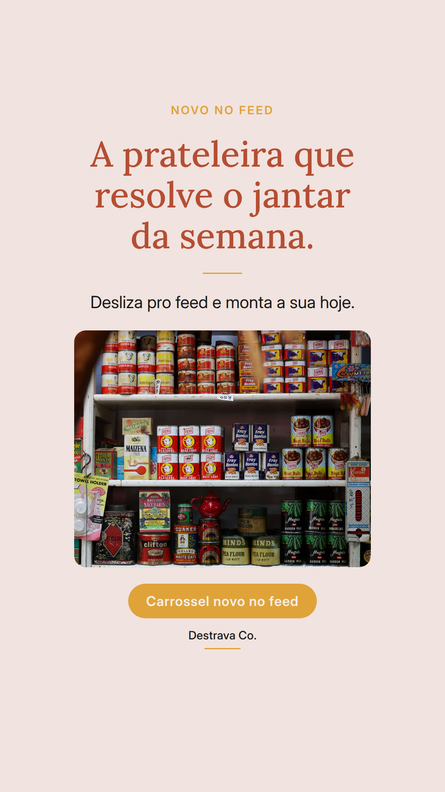
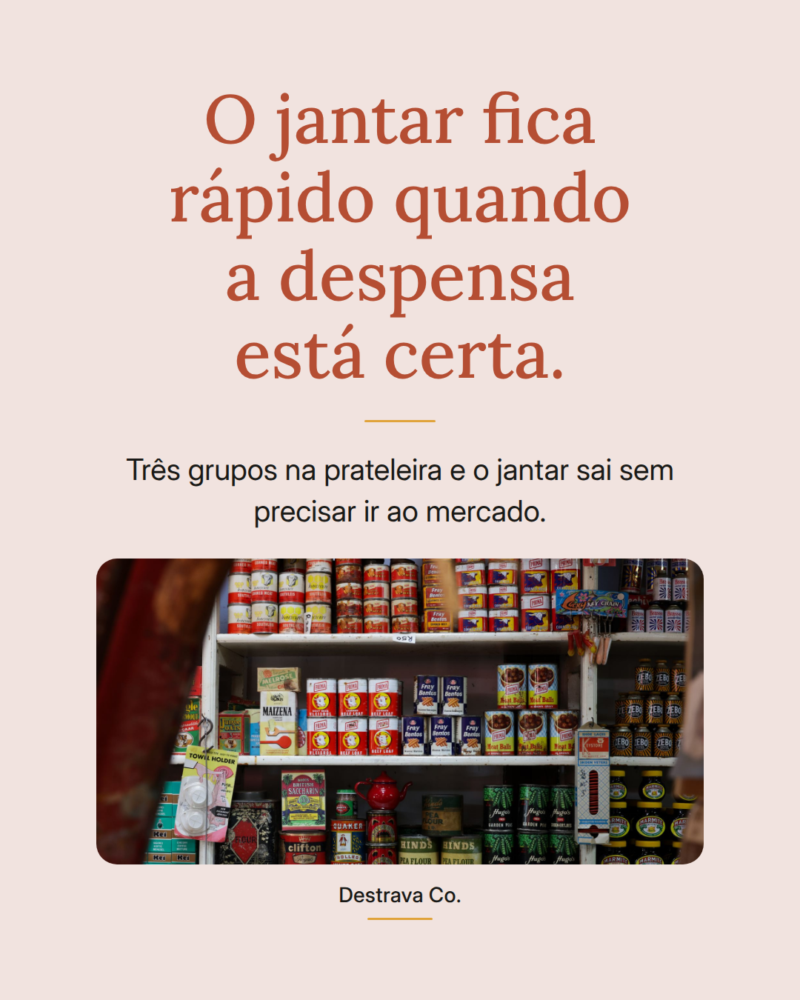
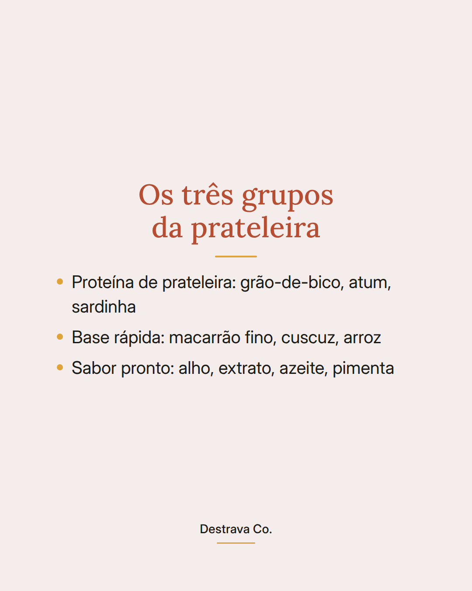
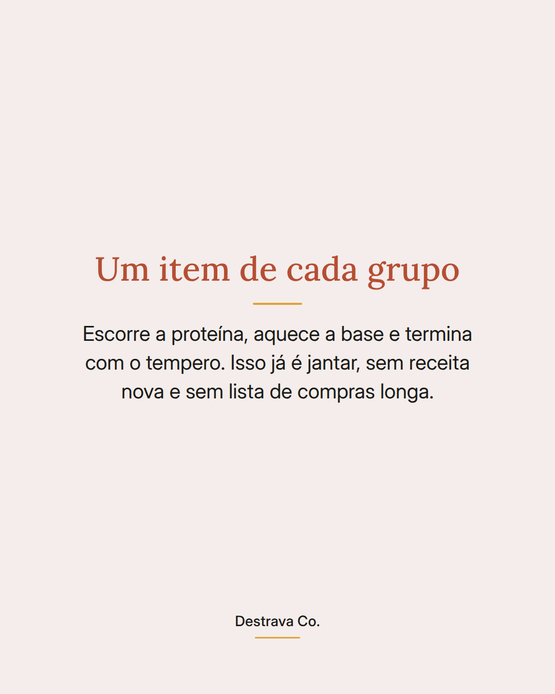

Jantar rápido começa na prateleira, não na panela.
Despensa organizada em três grupos resolve a semana: uma proteína que não estraga, uma base de cozimento curto e algo que dá sabor.
Com esses três em casa, você abre o armário e já enxerga a combinação. Escorre, aquece, tempera e serve. Nada de parar tudo pra ir ao mercado às oito da noite.
O truque de manter isso vivo é simples: assim que abrir uma lata ou terminar um pacote, anote. Na compra seguinte, a prateleira volta completa.
Salva pra montar a sua despensa no próximo mercado e manda pra quem sempre fica sem ideia de jantar. Se quiser receitas prontas que usam exatamente esses itens, o PDF com 20 receitas de até 15 minutos é gratuito.